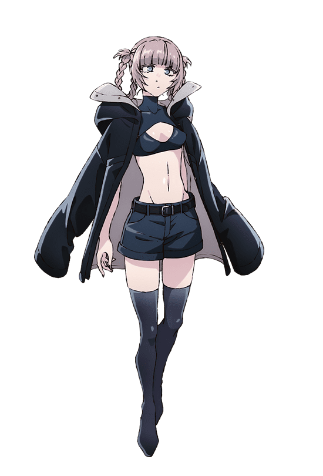

A LITTLE CORNER, AFTER MIDNIGHT
ras_crww
天才だってじてた
バカみたいだ
把日常、灵感与热爱，
悄悄收集在这里。
終焉の魔王
夜は、まだこれから。

02 / ABOUT ME
关于我
一个收藏夜晚的小小角落。
ras_crww
終焉の魔王
日常 / 灵感 / 音乐 / 深夜漫游
「初めて夜に一人で外に出た。」—— よふかしのうた03 / JOURNAL
最新随笔
把喜欢的台词，留在这里。
原作短句收藏 · 随笔内容占位
04 / SELECTED WORKS
精选作品
夜间切片 / Night fragments
动画视觉收藏 · 作品内容占位
06 / CONFIG
设置
让这个夜晚，更合你的心意。
转场以七草荠为主，莺馅子偶尔客串。
夜间留言
路过这个夜晚，留下一点声音。昵称就好，不用注册。
这里还很安静。
第一句晚上好，留给你。